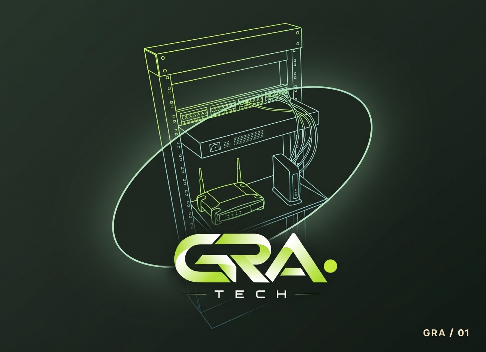
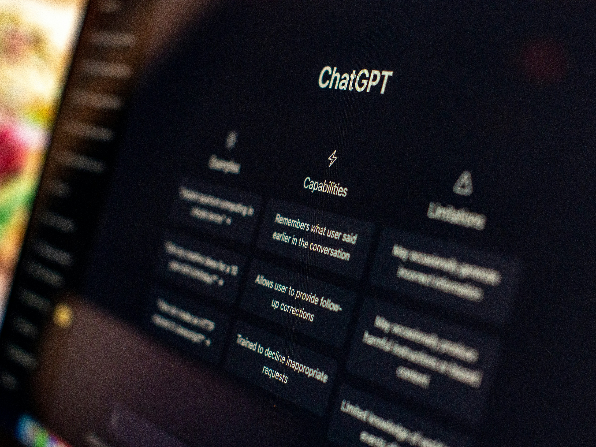
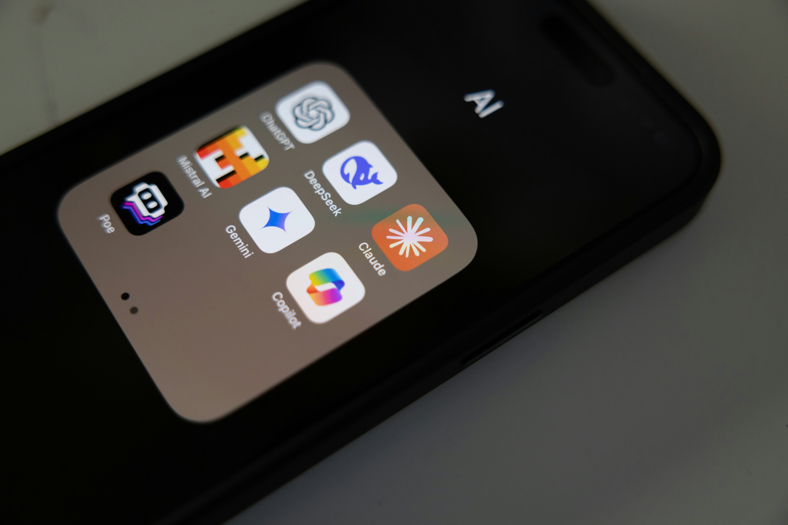
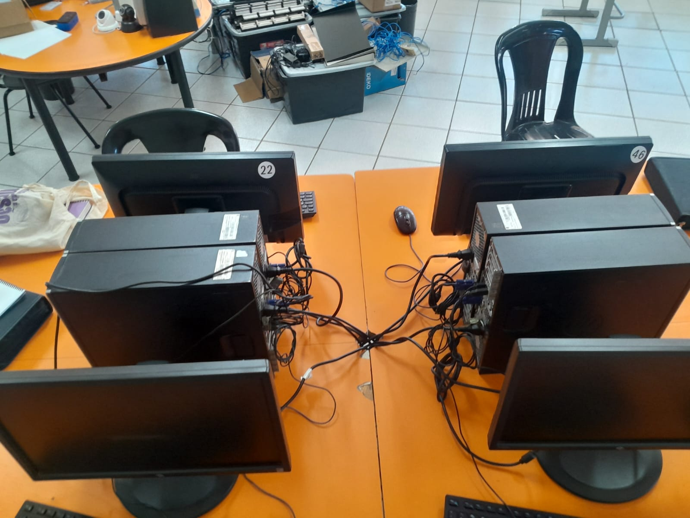
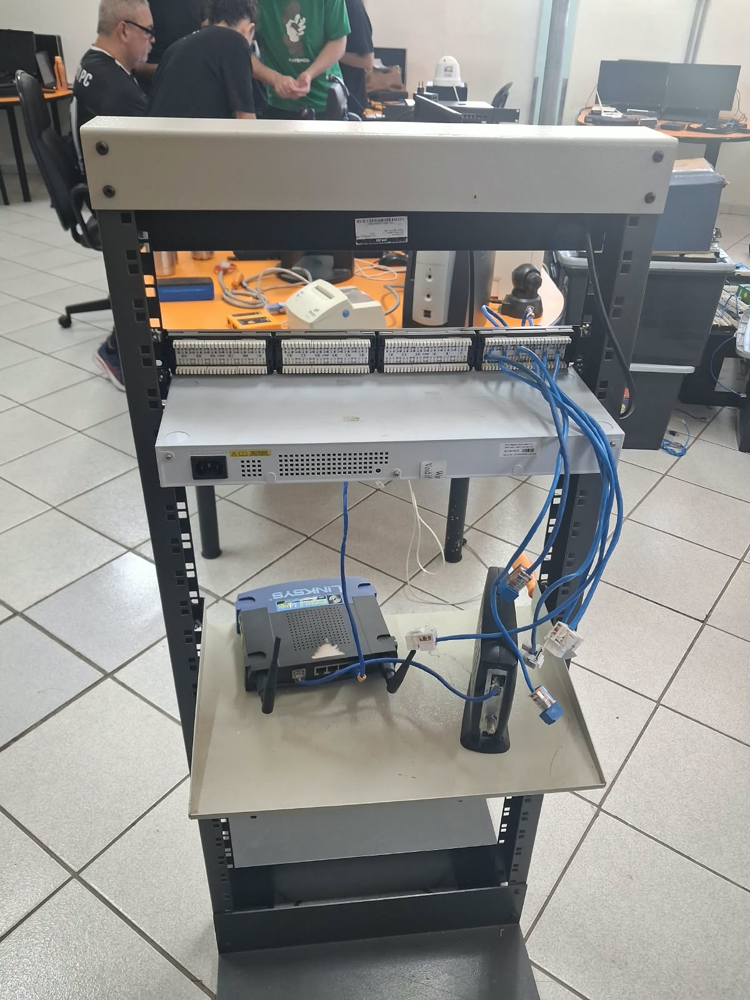
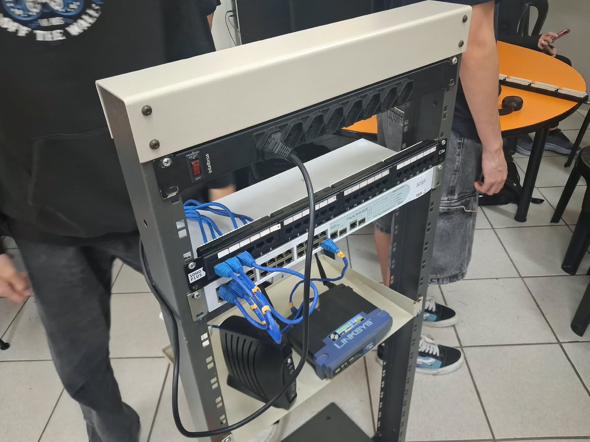
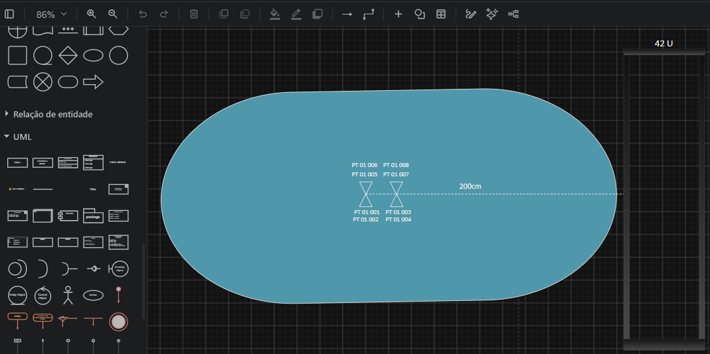
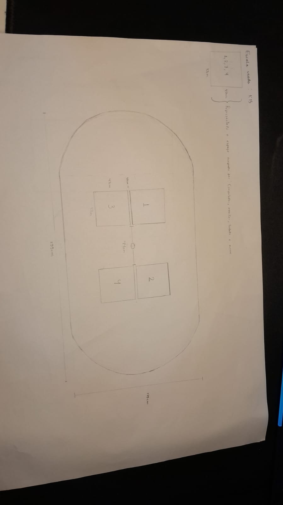
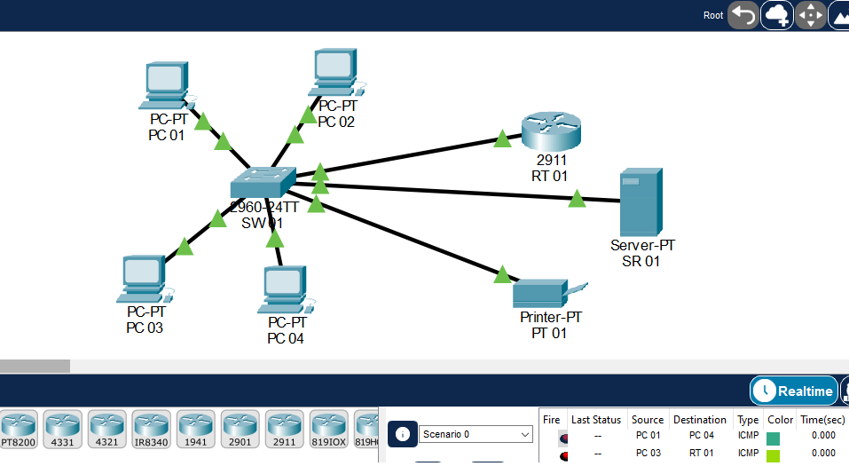
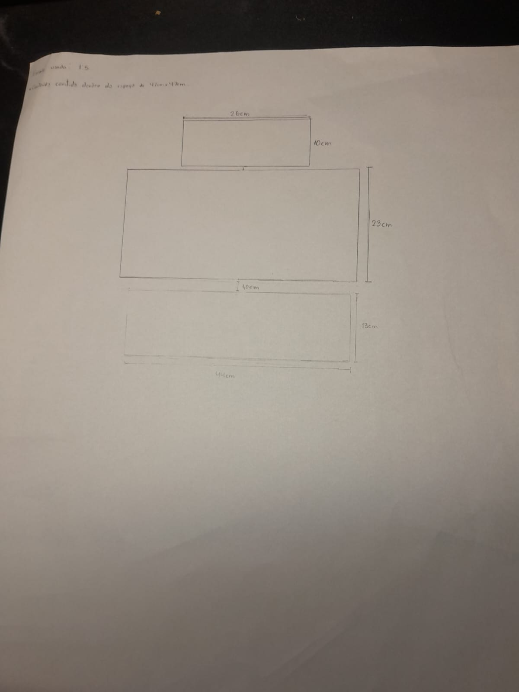

Engenharia elétrica e automação
Dimensionamento, segurança e automação para ambientes operacionais.
NORMAS / ENSAIOS / AUTOMAÇÃOINFRAESTRUTURA + TECNOLOGIA.
Energia, redes, segurança eletrônica e nuvem em um só parceiro, com apoio de IA para projetos mais ágeis e bem documentados.

01 / O QUE FAZEMOS
Um time multidisciplinar, do início ao próximo ciclo. Entramos onde o seu desafio precisa e conectamos as pontas.
Dimensionamento, segurança e automação para ambientes operacionais.
NORMAS / ENSAIOS / AUTOMAÇÃOMontagem, manutenção, inventário e licenciamento de sistemas.
MANUTENÇÃO / TESTES / LICENÇASProjeto, layout e orçamento de uma rede segura e escalável.
VISITA TÉCNICA / LAYOUT / BOMCobertura inteligente e monitoramento de vídeo do ambiente.
VISTORIA / CÂMERAS / ARMAZENAMENTOAnálise de demandas e migração para a melhor solução de mercado.
DIAGNÓSTICO / MIGRAÇÃO02 / IA NO NOSSO PROCESSO
Usamos IA para ganhar agilidade em análise e documentação. Decisões técnicas, normas e segurança ficam com a nossa equipe.

Organizar as anotações da visita e transformar requisitos em checklist.

Comparar equipamentos, soluções de nuvem e alternativas de mercado.

Refinar a redação da proposta e conferir a lista de materiais.
03 / DO CAOS À ORGANIZAÇÃO

Cabos soltos, falta de identificação e risco de falhas. É o que encontramos na visita técnica.


Rack, patch panel e cabeamento padronizados, com mais segurança, manutenção simples e espaço para crescer.
04 / PROJETO E DOCUMENTAÇÃO
Da ideia ao desenho técnico, cada etapa é documentada para dar clareza às decisões.




05 / COMO PENSAMOS
Previsibilidade do primeiro contato à entrega.
TECNOLOGIA É MEIO. EVOLUÇÃO É O OBJETIVO.Diagnóstico das necessidades e restrições do ambiente.
Layout, lista de materiais e proposta financeira detalhada.
Instalação, testes de validação, entrega técnica e suporte contínuo.
PRÓXIMO MOVIMENTO
Conte o que precisa mudar. A gente ajuda a encontrar o caminho.